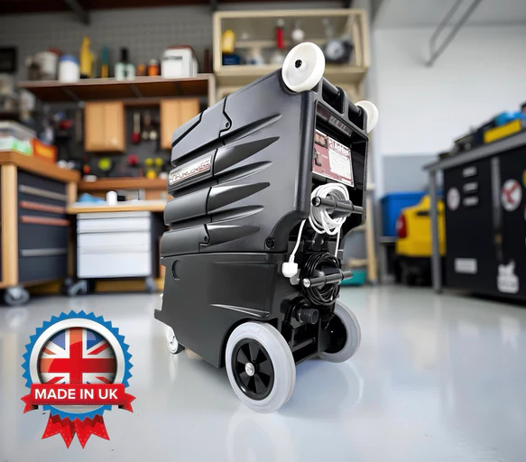

Assess the floor
We identify the tile type, condition and level of soiling first.
Deep hard floor cleaning for tiled areas that have become dull, greasy or heavily tracked, with optional sealing where it suits the floor and the job.
Tiled floors often hold grease, soil and darkened grout lines that normal mopping cannot shift. We use proper cleaning equipment and the right chemistry for the floor type to lift built up dirt and improve the overall look of the area.
This service suits kitchens, utility rooms, hallways, washrooms, entrances and commercial floors where appearance matters. If the floor needs it, we can also advise on whether sealing is worthwhile after cleaning.

We identify the tile type, condition and level of soiling first.
The floor is treated according to the soil load and surface type.
We scrub and rinse the floor to lift built up grime from the surface and grout lines.
The floor is checked over and we advise on drying and ongoing care.
Many hard floor jobs are booked alongside carpet or upholstery cleaning, especially during move outs, refreshes and commercial tidy ups.

Deep cleaning for carpets in homes, managed properties and commercial spaces.
Explore service
Professional sofa and chair cleaning using methods matched to the fabric.
Explore service
Hotels, offices, guest accommodation and regular commercial work.
Explore service